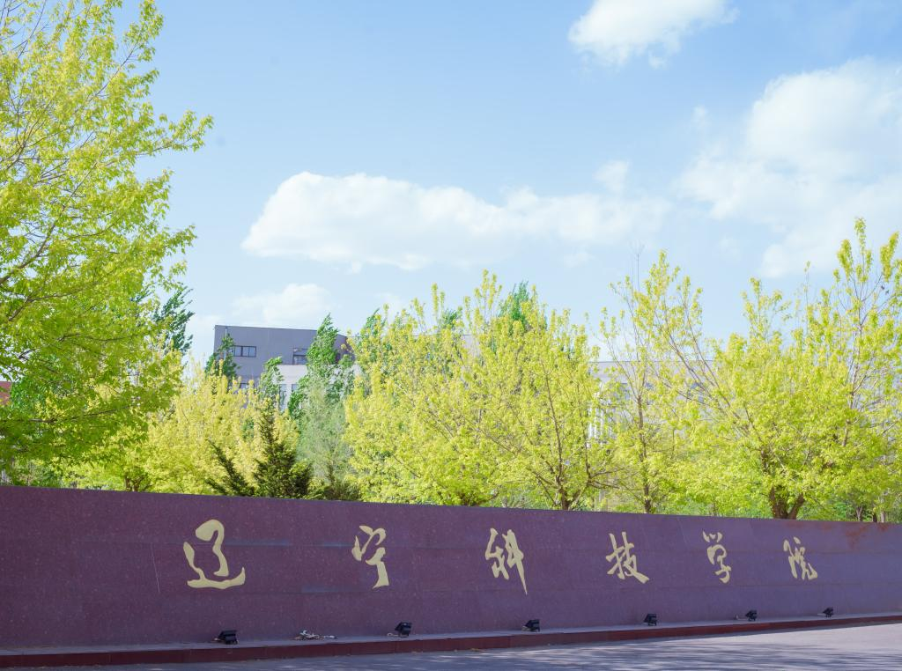
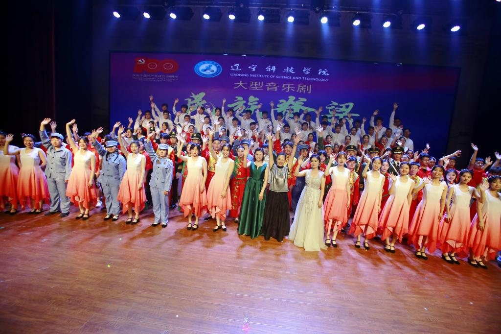
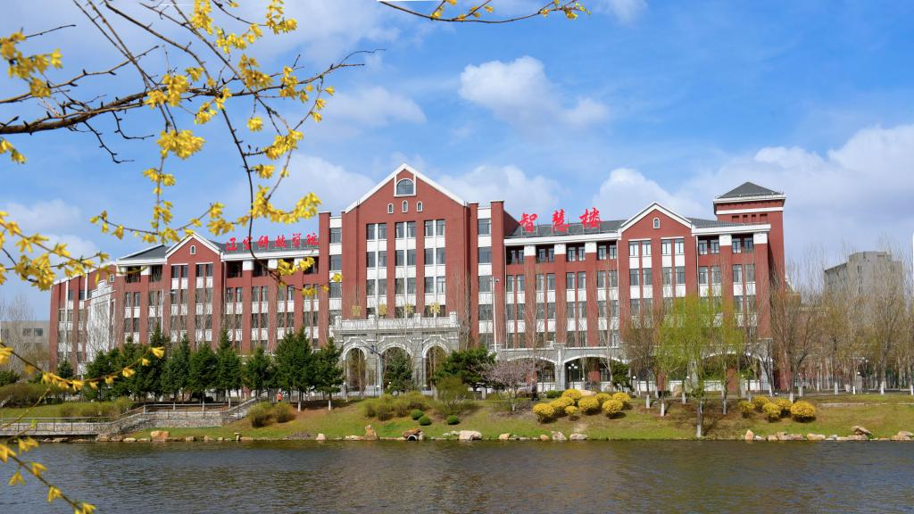
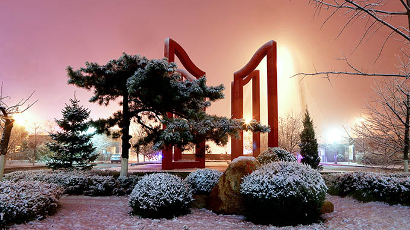

辽宁科技学院是一所以工科为主、多学科协调发展的省属普通本科院校。学校坐落在具有枫叶之都、钢铁之都、中国药都美称的 辽宁省本溪新城，距沈阳桃仙国际机场20公里，学校前身为本溪冶金高等专科学校，办学历史最早可追溯到成立于1907年的本溪 县立师范传习所，1948年东北解放后，更名为本溪工科高级职业学校，1958年升格为本溪钢铁工业学院，1985年更名为本溪冶金 高等专科学校。2000年，本溪市高等职业专科学校、本溪师范高等专科学校并入本溪冶金高等专科学校。2004年，升格为本科， 更名为辽宁科技学院。
转型成效
2015年，学校被确定为辽宁省首批向应用型转变的本科试点院校。2016年，被确定为教育部重点支持的产教融合项目建设高校、 教育部数据中国“百校工程”试点院校、“互联网+中国制造2025”产教融合促进计划试点院校。2017年，被确定为教育部“科学能力 提升计划（百千万工程）”全国首批试点院校、中国高校创新创业教育联盟“百城千校”首批试点院校、辽宁省向应用型转变示范校。 2018年，被确定为教育部首批新工科教育综合改革项目单位，国家发改委“新兴产业三年行动计划”重点项目单位、全国五四红旗团 委称号。2019年，教育部新工科项目获评中期优秀项目。2020年，获评教育部新工科教育综合改革优秀结题项目单位、辽宁省“1+X 证书”试点院校、第二批省军民融合单位。 “新松机器人学院”“曙光大数据学院”被认定为省级现代产业学院。2021年，获批国家发 改委“十四五”教育强国总投资1.06亿元项目，建设“辽宁科技学院数字化综合实训基地”。2022年，获第二批全省新时代党建工作示 范高校。2023年，获评“辽宁省劳动教育示范学校”，获批辽宁省高校院所知识产权运营中心建设试点单位。

办公资源
学校占地87万平方米，建筑面积34.6万平方米。固定资产原值10.75亿元，其中教学科研仪器设备原值2.31亿元。图书馆藏书106.9 万册。校内实验室（中心）42个，其中省级实验室4个（省级重点实验室1个，工程研究中心1个，工程实验室2个），省级实验教学 示范中心、虚拟仿真实验教学中心4个，省级大学生校外实践教育基地13个，省级大学生创新创业教育基地1个，省级大学生创新创 业基地1个,省级职业技能培训示范基地1个，省级大学生创业孵化示范基地1个，省级双创示范基地1个，省级双创学院1个、省级众 创空间1个。

师资队伍
学校开设以工为主，涵盖工、经、管、文、艺、教育等六大学科门类的40个本科专业。有国家级本科综合改革试点专业1个，2个专 业通过工程教育专业认证，国家级一流本科教育示范专业2个（广告学和冶金工程专业），省级一流本科教育示范专业11个，省级 本科综合改革试点专业1个，省级本科重点支持专业1个，省级本科工程人才培养模式改革试点专业1个，省级向应用型转变试点专 业3个，省级创新创业教育改革试点专业2个，省级精品课程14门。省级一流本科课程76门，国家级一流本科课程2门。
科学研究学校启动服务地方行动计划，面向辽宁省产业发展实际，不断提升协同创新和服务地方经济社会发展的能力。现有国家级技术转移 示范机构1个，省级公共技术服务平台3个，省级人文科学重点研究基地2个，省级产业集群窗口服务平台1个，辽宁省经济社会发展 研究基地1个，辽宁省高等学校新型智库1个。依靠学校人才技术优势成立了大材料应用研究院等13个科研院（所）。鼓励教师开展 应用型科研，促进科技成果转化，积极开展“科技特派员”工作，发挥“智囊团”和“思想库”作用，积极开展应用型科学研究，近5年 来共承担各类各级科研项目859项，其中，国家自然基金项目、国家社科基金项目12项，国家自然基金青年项目2项。省级以上项目 265项。获得省级科技进步奖5项。获批各类专利763项，发明专利99项，转化科技成果210项，其中省内转化科技成果199项。近五 年教育部产学合作协同育人项目139项，获得省级教学成果奖41项，其中一等奖4项。

校企合作
学校积极开展产学研合作，牵头组建“辽宁省机器人产业校企联盟”，并成为联盟理事长单位。搭建稳定的校企合作平台，成为辽宁 省钢铁产业产学研创新联盟、辽宁鹤腾科技热处理工艺装备产学研联盟等辽宁省典型实质性产学研等30个校企联盟理事单位。与中 国航空工业集团公司、青岛海尔股份有限公司、东北电力集团、中国能源建设集团、中铁建设集团、中国冶金建设集团、国家电网 公司、国家电力投资集团、神华集团、中国黄金集团、北京神州数码、北京钢铁研究总院、首钢集团公司、宝武集团公司、鞍钢集 团公司、中国五矿集团公司、中国铁道建设总公司、本钢集团公司、中国建设银行、中国工商银行、中国移动通信、中国建筑股份 有限公司等500多家企事业单位建立合作关系，接受学生实习、实训、就业。
红色育人学校依托本溪丰富独特的红色资源，以红色文化为载体弘扬东北抗联精神。学校东北抗联精神育人“筑梦空间”展馆先后获批“辽宁省 抗联精神当代价值研究基地”“辽宁东北抗联精神研究中心”“辽宁抗联研究实践基地”“辽宁省教育厅高等学校新型智库研究基地”“辽 宁省教育系统党员教育培训示范基地”“本溪市爱国主义示范教育基地”“辽宁省关心下一代党史国史教育基地”等荣誉称号。依托校内 红色资源，获批辽宁省高校“三全育人”综合改革示范院（系）、辽宁省高校“三全育人”公开基地、“三全育人”综合改革示范案例、“ 东北抗联学院”项目入选辽宁省“一圈一带两区”重点建设任务。“抗联学院”获批辽宁省现代产业学院。

国际交流
大力开展对外合作交流，坚持国际化发展战略。先后与东盟和东北亚5个国家和地区的10多所海外知名高校建立稳定合作关系。与俄罗 斯鄂木斯克国立技术大学开展机械设计及其自动化专业合作办学，第一届和第二届计划招生140人，实际招生136人。与韩国又松大学 、新罗大学、泰国梅州大学、宣素那他皇家大学、博仁大学、格乐大学、马来西亚彭亨大学、博特拉大学、新西兰维特国立理工学院 等先后建立了良好合作关系；招收索马里、苏丹、也门、肯尼亚、坦桑尼亚、尼日利亚、加纳、俄罗斯等多个国家留学生。稳步推进 国际合作交流工作，与俄罗斯维亚特卡国立大学、鄂木斯克大学双方达成联合共建国际实验室合作意向;与俄罗斯维亚特卡国立大学采 取双导师制联合进行硕士培养，第一批学生已顺利入学。

办学特色
“十四五”期间，学校坚持职普融通、产教融合、科教融汇，坚持应用型、行业性、地方性、国际化的办学定位，立足冶金行业，面向 产业升级，服务振兴发展，全面建设东北区域具有影响力、示范性、高水平应用型大学。着力打造四个办学特色：
用东北抗联精神育人，体系化落实立德树人根本任务，彰显“五育并举”丰硕成果。学校获得全国五四红旗团委、省教育工委示范党委、 两届省文明校园，被省公安厅授予一等功单位；
走示范性应用型办学之路，立足冶金行业、面向生产一线，培养“综合素质好、动手能力强、下得去、用得上、留得住的应用型高技能 人才”，钢铁企业就业集中度较高，省属高校绩效考核社会评价指标多次名列前茅；
开现代产业学院建设先河，校企深度合作、专业对接产业、联合定制培养方面走在前列。学校与国内外头部企业联合，共建了华为ICT 产业学院、新松机器人学院、曙光大数据学院、海尔物联网学院、中韩希杰学院、中铁学院、乡村振兴产业学院、抗联学院、苏州产业 学院等9个特色产业学院，其中华为ICT产业学院、新松机器人学院、曙光大数据学院、抗联学院获批辽宁省省级现代产业学院。共建“ 三征班”“启航青年管理者精英班”，培养人才深受企业好评；
融创新创业教育于人才培养全过程，以创促学、以赛促教，双创教育助力学生成长成才。学校建设近万平米的双创基地，2022年在各级 各类创新创业大赛中，获得国家级奖项62项、省级奖项512项。
